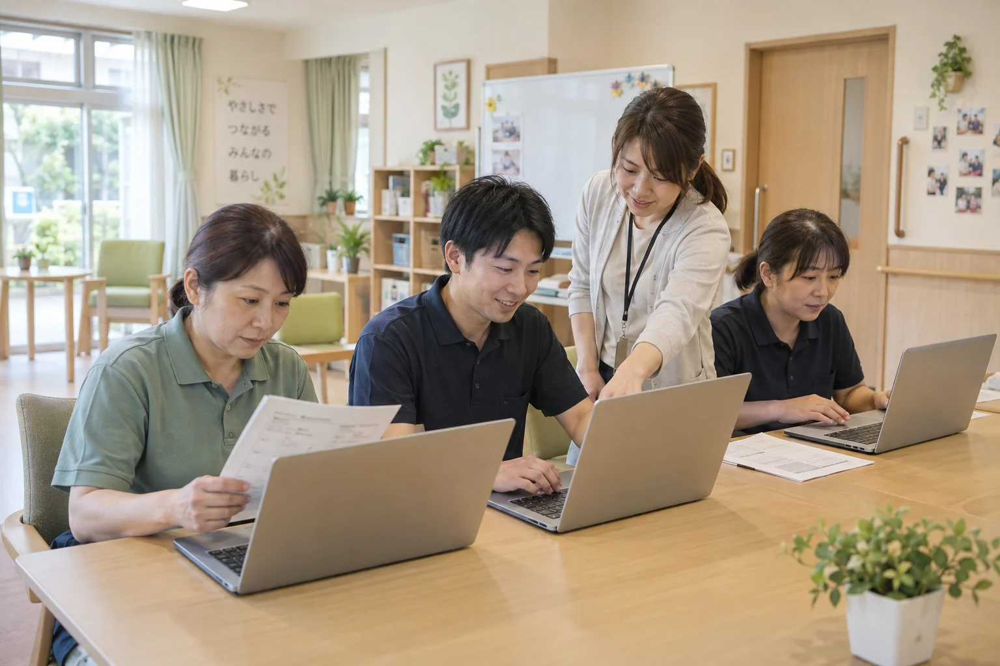
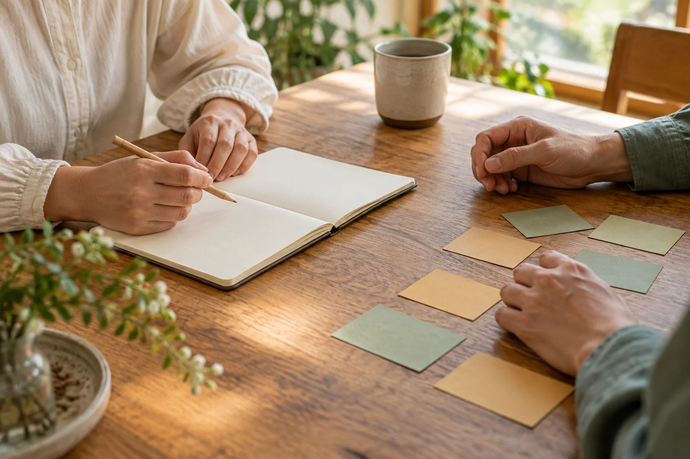

01 事業者・チームの方へ
書類に追われる時間を、
人に向き合う余裕へ。
記録や申し送りの下書き、研修資料づくり。今ある仕事の中から、AIに任せられる部分を一緒に探します。
- 日々の業務を題材にしたAI研修
- いつもの様式に合わせた下書き・資料づくり
- 職員さんが使い続けられる手順とサポート

できること
仕事の進め方を見直したいときも、
自分に合う働き方を考えたいときも。
気になる入口から、ご覧ください。

01 事業者・チームの方へ
記録や申し送りの下書き、研修資料づくり。今ある仕事の中から、AIに任せられる部分を一緒に探します。

02 自分の強みを知りたい方へ
「診断を受けたけれど、そのままになっている」。そんなときは、資質の名前を日々の行動と結びつけるところから。自分の強みを、自分の言葉で捉えていきます。
まずは入門ページで気軽に知るところから。対話しながら整理したい方には、セッションもご案内しています。
ストレングス入門を見る セッションについて知る →
HELLO, I'M OKEMON
はじめまして。介護・障害福祉の現場に16年いた、おけもんです。介護職員、サービス管理責任者、施設長として働いてきました。
目の前の人を助けたいのに、書類や日々の仕事で手がいっぱいになる。その現場を知る立場から、仕事の負担を軽くする方法や、その人の強みを活かす方法を一緒に考えます。
AIを使うことも、強みを知ることも、その先にいる人のために。どこから始められそうか、今の状況に合わせて整理するところからお手伝いします。
SELECTED WORKS
AIの活用を伝えるページから、
その人らしさが伝わるホームページまで、
制作しています。
LET'S TALK
「この作業、少し楽にできるかな」
「自分の強みを、どう活かせばいいんだろう」
まとまっていなくても大丈夫。一緒に整理しましょう。
オンラインで30分〜1時間。相談は無料です。